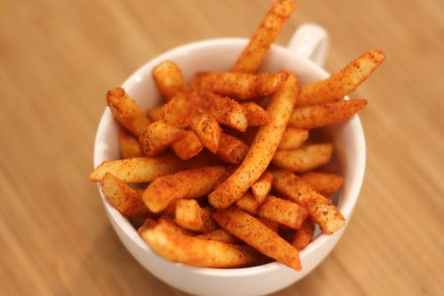

Peri Peri Fries

HOME
DESCRIPTION
cruncy and as well as soft fries gets introduced to flavour town i.e. the indian spices
INGREDIENTS
- potatoes
- cornflour
- olive oil
- salt
- peri peri mixture
STEPS
- Cut the potatoes in cuboid shape
- heat your oil and fry until a nice light crisp
- dip your fries in cornflour water and fry again
- afte cooling them for few seconds
- sprinkle peri peri mix and salt and shake for a minute and enjoy your tasty fries!!